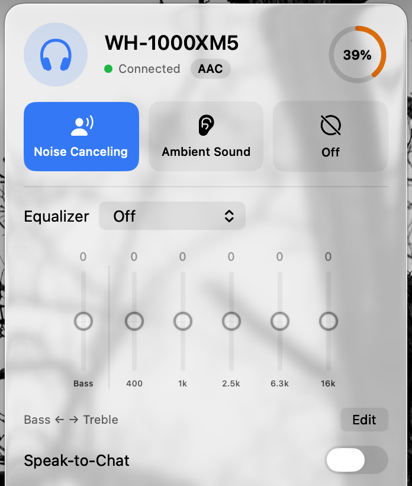

Sony WH-1000XM4, XM5 & XM6 on Mac
How Bluetooth multipoint, ANC control and call audio work on macOS, plus a 2-minute hardware check for WH-1000XM4 and WH-1000XM6 owners.
Which Sony models are tested vs. waiting for reports
Headphone Control talks directly over a Bluetooth RFCOMM channel using macOS IOBluetooth, with no Sony account and no internet access. Because Sony firmware and protocol fields vary between generations, each model needs real-device verification.
| Model | Hardware status | What we need from owners |
|---|---|---|
| WH-1000XM5 | Tested on real hardware | Report edge-case firmware bugs or multipoint quirks; see the WH-1000XM5 setup guide. |
| WH-1000XM4 | Implemented, untested | Confirm connection, Noise Canceling / Ambient / Off toggles, EQ presets, battery reading and multipoint switching. |
| WH-1000XM6 | Implemented, untested | Confirm Bluetooth RFCOMM detection, ANC/ambient sliders, EQ bands, battery estimate and whether any toggles fail silently. |
| WF-1000XM4 / XM5 / XM6, LinkBuds S / Fit / Open, WH-CH720N, ULT WEAR | Implemented, untested | Even a short note saying "it didn't connect" with your Mac model, macOS version and firmware helps narrow protocol differences. |
Why Sony headphones behave unpredictably across phone and Mac
Most Mac + Sony headaches happen because Bluetooth splits audio playback, microphone calls and settings control into three separate layers. Changing one does not automatically fix the other two.
1. Stereo Audio (A2DP)
Plays music and video from whichever multipoint device currently holds playback focus. Controlled in System Settings → Sound → Output on Mac.
2. Call Mic Profile (HFP)
Turns on automatically whenever Zoom, Meet or FaceTime opens the headset microphone, temporarily dropping music quality to low-bandwidth mono.
3. Settings Control (RFCOMM)
Carries ANC, ambient level, EQ and battery state. Close Sony's phone app while testing so the Mac can open the control channel cleanly.
Switching multipoint & profiles without grabbing your phone
On tested WH-1000XM5 hardware, Headphone Control lets you inspect paired multipoint devices from the menu bar, pull playback over to your Mac with one click (Play on Mac, also available via a keyboard shortcut or Control Center on macOS 26), or switch automatically when the Mac starts playing audio.
You can also save Profiles and add automatic rules that change noise mode or EQ during a call (reading macOS mic-in-use state without accessing the mic), while a chosen app is open, or when the screen locks. Your previous settings restore when the rule ends.
Only WH-1000XM5 screenshots are shown here. We will add XM4/XM6 notes only after real hardware testing.


Common Mac connection, multipoint & audio fixes
Work through the symptom that matches what you hear. These isolate macOS Bluetooth behavior from beta bugs.
Music plays on Mac, but Headphone Control cannot find my XM4 / XM5 / XM6
1) Verify the headphones are connected in System Settings → Bluetooth. 2) Open System Settings → Privacy & Security → Bluetooth and make sure Headphone Control is allowed. 3) Force-close Sony's companion app on your iPhone or Android phone (only one settings app should talk to the headset at once). 4) Click Scan again in Headphone Control. If audio works while control still fails, report that exact split.
Multipoint audio stays stuck on my phone when I press play on Mac
Pause playback and close active audio apps on the phone first; some apps keep holding the A2DP stream silently. In Headphone Control, check the multipoint device list or trigger Play on Mac. If the Mac shows Connected in Bluetooth settings but no sound plays, verify System Settings → Sound → Output.
Audio sounds flat, hollow or muffled during calls or after hanging up
When macOS activates the headset microphone, Bluetooth drops from high-quality stereo to call profile. Apple documents this behavior in If sound quality is reduced with Bluetooth headphones. To keep stereo music quality while working, set System Settings → Sound → Input to your Mac's built-in microphone, or quit the call app and reselect your headphones in Control Center → Sound.
TestFlight says Accepted, or shows macOS 13, but there is no Install button
Clicking Accept on the web invitation does not install a Mac app. First download Apple's free TestFlight app from the Mac App Store, open it, select Headphone Control and click Install. Note: Apple's generic join page displays "macOS 13 or later", but Headphone Control requires macOS 14 Sonoma or later.
I don't have my Sony headphones at my desk right now
Open Headphone Control and click Try demo mode on the "Not connected" screen to inspect the interface, profiles and EQ controls with sample data. Note that demo mode does not test Bluetooth hardware compatibility.
2-minute hardware test for XM4, XM6 & earbud owners
If you own an untested Sony model and a Mac on macOS 14+, you can give us actionable hardware signal in four quick steps:
- Install via TestFlight: Get Apple TestFlight for Mac, open the beta link, click Accept, then click Install and allow Bluetooth access on first launch.
- Prepare Bluetooth: Pair and connect your headphones in System Settings → Bluetooth, close Sony's phone app, and open the headphone icon in the Mac menu bar.
- Run 4 fast checks: Does your model show Connected? Do Noise Canceling / Ambient Sound / Off switch audibly? Does an EQ preset (e.g. Bass Boost vs Off) change sound? Do Multipoint devices and Battery % show accurately?
- Send your result (even if it failed to connect): Pick your model below to open a pre-filled email, use Send Beta Feedback inside TestFlight, or open a GitHub model report.
Optionally include Settings → About → Advanced: connection log when reporting connection issues. Download plain-text report template.
Also looking at SonyBridge or Open Sound Connect?
If you want open-source code, Windows/Linux support, or macOS 12–13 compatibility, read our side-by-side comparison of Headphone Control, SonyBridge and Open Sound Connect (including where the other two apps are stronger).
Try Headphone Control 1.1 on your Mac
Free · Closed source · macOS 14+ · Tested on WH-1000XM5; hardware feedback needed for XM4, XM6 and Sony earbuds.
Verified help & related guides
- WH-1000XM5 on Mac: full setup, ANC & EQ walkthrough
- XM5 on Zoom, Teams & Meet: fix muffled call audio
- Headphone Control vs SonyBridge vs Open Sound Connect
- Full 9-model compatibility & report links
- Apple: Connect a Bluetooth device with your Mac
- Apple: Change the sound output settings on Mac
- Apple: If sound quality is reduced with Bluetooth headphones
- Sony WH-1000XM5 Help Guide: Pairing and connecting with a Mac